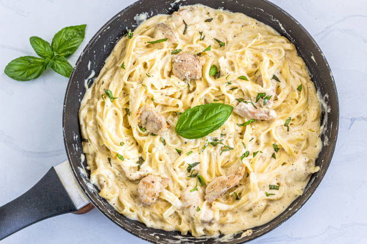

Chicken Alfredo w/ Alfredo Sauce!

Description
An easy to make Chicken Alfredo recipe, you complete this in as little as 30 minutes!
Ingredients
Before we begin, we will need the following ingredients:
- Fettucini noodles, 16oz
For Chicken:
- Chicken Breast, boneless, 1 pound
- Italian Seasoning, 1 teaspoon
- Kosher Salt, 3/4 teaspoon
- Pepper, 1/4 teaspoon
- extra-virgin olive oil, 2 tablespoons
- Butter, 1 tablespoon
For Sauce:
- Butter, 1/2 cup and cut into cubes
- Heavy whipping cream, 2 cups
- 1 minced garlic clove
- Garlic powder, 3/4 teaspoon
- Italian seasoning, 3/4 teaspoon
- Salt and pepper, 1/4 teaspoon each
- Freshly grated parmesan, 2 cups
Once you've gathered everything, we'll begin with the instructions!
Instructions
-
Begin by bringing a pot of salted water to boil. Add fettucini and cook till al dente.
-
Next, we'll start cooking the chicken. Season the chicken breasts with salt, pepper, and italian seasoning!
-
Start heating olive oil in a pan at medium heat, preferably in a non-stick pan. If you don't have those on hand, use pam spray or butter.
Once the oil is shimmering, swirl your pan around so it gets coated in the good stuff. Add your chicken and cook until both sides are golden brown.
-
Once your chicken is cooked, move it over to a cutting board and let it sit for a few minutes. Start cutting the chicken into 1/2 inch slices.
Cover with foil to preserve heat, we'll be moving onto the sauce next!
-
In the same pan, bring the heat to a medium-low temperature. Add the butter and cream and whisk away until the butter has melted.
-
Add in your garlic, garlic powder, italian seasoning, salt and pepper. Whisk away until it's combined and smoothed out.
-
Bring it to a gentle simmer, but do not boil it. Cook for a few minutes while whisking until the mixture starts to thicken.
-
Stir in your parmesan until the mixture is smooth and thick. If you find your sauce is too thick, you can add some water to it to lessen it.
-
Now you can start assembling your Chicken Alfredo! Pour your still-hot sauce onto your noodles, add your chicken and mix it all up! Grab some
plates or bowls and serve your delicious meal.
Now you know how to prepare a delicious Chicken Alfredo! Don't forget to add some garlic bread and a nice, light salad and enjoy your meal.
(This page is largely paraphrased from this website.)
Home